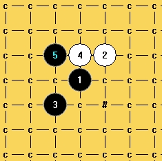

九级棋怪破狼:斜二次强败12地毯谱
#1 九级棋怪破狼:斜二次强败12地毯谱 作者：有志青年 发表时间：2011-8-17 17:36:51

［此帖子已被 有志青年 在 2011-8-17 17:37:11 编辑过］
［ 业余九级菜手 于 2011-8-17 19:37:07 时花20金币送鲜花一朵］
［ 业余九级菜手 于 2011-8-17 19:37:14 时花20金币送鲜花一朵］
［ 业余九级菜手 于 2011-8-17 19:37:20 时花20金币送鲜花一朵］
［ 业余九级菜手 于 2011-8-17 19:37:26 时花20金币送鲜花一朵］
［ 业余九级菜手 于 2011-8-17 19:37:33 时花20金币送鲜花一朵］
#2 Re:九级棋怪破狼:斜二次强败12地毯谱 作者：隐语者 发表时间：2011-8-17 18:31:02
学习了，为什么都喜欢做到43呢，太大了#3 Re:九级棋怪破狼:斜二次强败12地毯谱 作者：四川连珠魂 发表时间：2011-8-17 18:54:37
没看到 谱中的败12 是指哪个12呢
#4 Re:九级棋怪破狼:斜二次强败12地毯谱 作者：五连达人 发表时间：2011-8-17 18:58:19
才到10呀
#5 Re:九级棋怪破狼:斜二次强败12地毯谱 作者：业余九级菜手 发表时间：2011-8-17 19:36:47
斜二次强10败12地毯谱
=======上图对应的爱五子棋谱代码如下，以便你拆解：========
h8i9g7h9g9i7i10g10f8h10h6e9
======================================================
［ gerbo 于 2011-8-18 0:30:19 时花20金币送鲜花一朵］
#6 Re:九级棋怪破狼:斜二次强败12地毯谱 作者：小帮帮 发表时间：2011-8-18 0:05:58
谱做得不错，蛮精细的，不过这么小的一个分支就这么大的谱？好夸张啊#7 Re:九级棋怪破狼:斜二次强败12地毯谱 作者：gerbo 发表时间：2011-8-18 0:19:53
才发现你早发了这个谱，我做的258KB，如果只用终结者的扫描点，我那个应该可以减少100KB。感谢你提供的棋谱，方便了很多人。
#8 Re:九级棋怪破狼:斜二次强败12地毯谱 作者：百无禁忌 发表时间：2011-8-18 7:00:50
感谢
#9 Re:九级棋怪破狼:斜二次强败12地毯谱 作者：陈唯一 发表时间：2011-8-18 11:45:15
=======上图对应的爱五子棋谱代码如下，以便你拆解：========
h8h9i7g9i9g7g10i10j8h10h6k9g8f8i11k8k7e7d6f7
======================================================这个好像还复杂
#10 Re:九级棋怪破狼:斜二次强败12地毯谱 作者：gerbo 发表时间：2011-8-18 18:29:13
21在19上一路。
#11 Re:九级棋怪破狼:斜二次强败12地毯谱 作者：dyccj 发表时间：2011-8-22 13:36:16

#12 Re:九级棋怪破狼:斜二次强败12地毯谱 作者：左伟光 发表时间：2011-8-23 0:38:43
没看懂，谢谢了
#13 Re:九级棋怪破狼:斜二次强败12地毯谱 作者：悠悠紫叶情 发表时间：2011-9-12 14:15:43
=======上图对应的爱五子棋谱代码如下，以便你拆解：========
h8h9g7i9g9i7i10g10f8h10h6e9i8j8g11e8e7g6h5d7h4h7f9f6i5j4f5k7l6j7l7j5j6g3l5l4k6i6m6n6k4j3l9l8m8k10m9j2j1m5k3n9
======================================================
这样怎么杀，谱上没做这个48
#14 Re:九级棋怪破狼:斜二次强败12地毯谱 作者：悠悠紫叶情 发表时间：2011-9-12 15:42:49
刚自己试着杀了下，谱中的18杀法错误
现提供正确杀法
=======上图对应的爱五子棋谱代码如下，以便你拆解：========
h8i9g7h9g9i7i10g10f8h10h6e9i8j8g11e8e7g6h5d7h4h7f9f6i5j4j5k5l6
======================================================
#15 Re:九级棋怪破狼:斜二次强败12地毯谱 作者：棋男子 发表时间：2011-10-14 13:43:44
先下了~~谢谢有志#16 Re:Re:九级棋怪破狼:斜二次强败12地毯谱 作者：业余九级菜手 发表时间：2011-10-22 5:07:44
引用：谢谢指正27手的错杀。
原文由 悠悠紫叶情 发表于 2011-9-12 15:42:49 :刚自己试着杀了下，谱中的18杀法错误
现提供正确杀法
=======上图对应的爱五子棋谱代码如下，以便你拆解：========
h8i9g7h9g9i7i10g10f8h10h6e9i8j8g11e8e7g6h5d7h4h7f9f6i5j4j5k5l6
======================================================